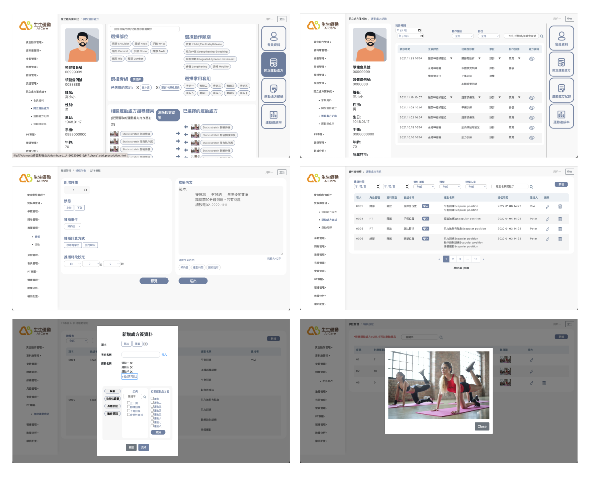

Concept
Cooperate with the therapist in the clinic to sign the prescription and cooperate with the App under development to design.
The platform allows therapists and sports therapists to integrate data and query faster—optimization therapists. The workflow is more efficient for signing prescriptions for patients.
Roles
Prototype / Coding
In the early stage of backstage design, discussions were held with various departments. In addition to pure visual arrangement, it was also a matter of collaboration between the physical therapist and the sports manager, who conducted multiple interviews. During the production and post-production period, users were allowed to experience the prototype and make modifications.
Make use of the situation in line with the physical therapist. When making it, first draw on AdobeXd and then code it into the prototype of the static page.
Mockup
Design
I used gray, white, and deep blue colors in the design. To reduce saturation while maintaining texture, especially in situations with much complex information in the background.
Since therapists and administrators often need to use the backend to adjust patient prescriptions and manage member profiles, frequent object selection and drag-and-drop actions are required. Therefore, a grid-based layout is commonly employed to enable users to perform the required actions quickly and accurately.